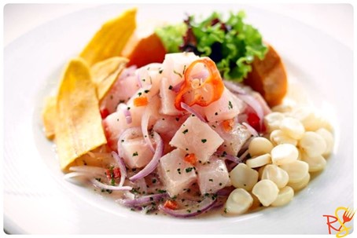

De beste gerechten van Zuid-Amerika!
Ceviche (Peru)
-
Ceviche is het nationale gerecht van Peru en bestaat uit plakjes rauwe vis of schaaldieren die zijn gekruid met zout, uien en chilipepers, en vervolgens zijn gemarineerd in limoensap. Door de zuurgraad van het limoensap verandert de textuur van de vis, evenals de kleur (van roze naar wit). De zure marinade, ook bekend als leche de tigre (tijgermelk), "kookt" het vlees zonder dat er hitte aan te pas komt. Voor ceviche is verse vis een eerste vereiste, omdat vis en schaaldieren die niet vers zijn voedselvergiftiging kunnen veroorzaken.
- 
Churrasco (Brazilië)
-
Churrasco is een Braziliaanse barbecuemethode waarbij sappige stukken, plakken, steaks en koteletten van rund-, kalfs-, lams-, varkens- en kippenvlees op grote spiesen worden gelegd en boven houtvuur worden gegrild.
- >
Alfajor (Argentië)
-
Alfajor is een soort traktatie met een vulling van dulce de leche of melkjam die tussen twee zoete koekjes wordt geklemd. De combinatie wordt vervolgens bedekt met een laagje choco-lade of bestrooid met poedersuiker.
- >
Asado (Argentië en Uruguay)
-
Asado bestaat traditioneel uit een brede selectie van gegrild vlees, voornamelijk rundvlees, waar Argentinië het meest bekend om staat. Het vlees wordt bereid op een speciaal gemet-selde grill, la parrilla genaamd, en het vuur kan worden aangemaakt met houtskool (parrilla al carbón) of hout (parrilla a leña), wat meer typisch is voor het platteland en bekend staat als asado criollo, een term die duidt op een meer rustieke, traditionele manier van grillen.
Dulche de leche (Argentië)
-
Dulce de leche is een soort gecondenseerde melkzoet uit Argentinië. Traditioneel wordt het gemaakt door gezoete koemelk te verhitten tot die karameliseert en een dikke consistentie krijgt, voldoende om te dienen als broodbeleg, vulling voor gebak en taarten, of als topping voor ijs.